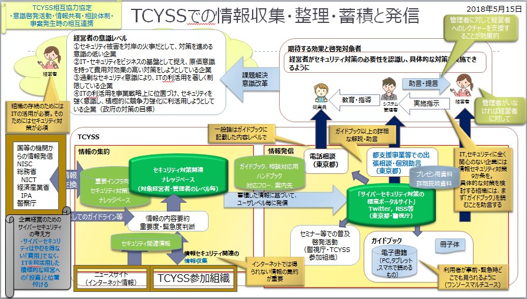

- Sec01-08-2 専門員の所掌業務及び調査分析項目
- 改版履歴
- 【2020年1月29日】「中小企業向けサイバーセキュリティ対策の極意」の改訂（追補資料の作成）の詳細をSec01-01-01へ移行
- 【2019年10月9,24日】資料目次作成及びリンク

- 【2019年9月26日】専門員要件の追加
- 【2019年7月26日】ポータルサイトの追加仕様
- 【2019年7月25日】極意の校正予定箇所の提示(現行構成毎)
- 【2019年6月21日】極意の校正予定箇所の提示
- 【2019年6月13日】2019年実施項目【案】、項目表の併合
- 【2018年10月24日】所掌業務内容の明確化
- 【2018年10月11日】「情報収集・整理・蓄積と発信」のイメージ図を最終ページに移動
- 【2018年6月6日】係会議資料として提出
 資料目次
資料目次 専門員の所掌業務及び行動規範の概要
専門員の所掌業務及び行動規範の概要- 専門員の所掌業務の詳細内容
 ポータルサイト新規ページ仕様
ポータルサイト新規ページ仕様- 中小企業向けサイバーセキュリティ対策情報の発信【体系的な情報アーカイブ】
- 「中小企業向けサイバーセキュリティ対策の極意」の改訂（追補資料の作成）
- 「中小企業向けサイバーセキュリティ対策の極意」の内容の詳細化（解説資料の作成）
- 中小企業向けサイバーセキュリティ対策のハンドブック【対策情報の書庫】【ナレッジデータベース】の維持・更新
- 別添資料
- TCYSSでの情報収集・整理・蓄積と発信
- 専門員の所掌業務及び行動規範の概要
- 所掌事務
- （１） サイバーセキュリティに関する中小企業からの相談対応（窓口・電話・メールなど）及び相談記録作成⇒【受付業務】
- （２） サイバーセキュリティに関する中小企業支援施策の実施に関する業務（※普及啓発セミナーの運営、事例集作成等）⇒【情報発信】
- （３） 課長級、課長代理級からの指示に基づく各種資料作成業務⇒【情報収集・整理・蓄積】
- （４） その他付随する業務
 ガイドブック送付依頼受付及び発送
ガイドブック送付依頼受付及び発送- 会議等設営準備
- 係内庶務
- 求められる能力（専門員公募要項より）
- 事務処理(Word,Excel等のパソコン操作を含む)について一定の知識・能力を有する
- 社会人の常識とされる「ITパスポート試験」レベルの知識・能力
- サイバーセキュリティや情報システムに関する基本的な知識を有していることが望ましい
- IT関連の基礎技術とされる「基礎情報技術者試験」認定レベルの知識・能力
- 可能であれば、「情報セキュリティマネジメント試験」認定レベルの知識・能力
- 職務を遂行する意欲を有している
- 公務員倫理、職業倫理に沿った行動の中で、自己の能力を発揮し自己実現する
- 基本姿勢
- 専門員の所掌事務を具体的な業務として目標を設定し、その目標の達成を目指す
- ITおよびセキュリティの最新動向を把握して、専門員としてのスキル、知識の維持・向上を図り、モチベーションを維持する（スキル・知識を陳腐化させない）
- 公務員倫理、東京都コンプライアンス、職業倫理に沿って行動する
- 専門員としての行動規範
- 非常勤専門員の役割
- 学識・知識・経験等に基づき、業務に補助的に従事し、行政運営を補完する
- ワーク・ライフ・インテグレーションを目指す
- 自らの人生観を軸に、職業生活と個人生活を柔軟、かつ高い次元で統合し、双方の充実を求めること
- それによって生産性や成長拡大を実現するとともに生活の質を高め、充実感と幸福感を得るなどの相乗効果を目指す働き方
- 自己の能力を発揮、自己実現して、創造性のある仕事を効率的・効果的に。確かにできてきることを日々のアウトプットで検証。
- 所掌分担の明示の目的
- 相談対応の回答内容の均質化を目指す
- 専門員の知識・ノウハウの形式知化（ドキュメント化）
- ドキュメントによる情報の共有とノウハウの蓄積
- 相談対応の回答レベルの向上に努める
- 日常での情報収集、整理
- 専門員の交代時の引き継ぎの円滑化を図る
- ドキュメントによる引き継ぎ
- 専門員の所掌業務の詳細内容
- （１） サイバーセキュリティに関する中小企業からの相談対応（窓口・電話・メールなど）及び相談記録作成
- （相談対応の質の向上、均質化）
- 方針
- 一次対応担当（フロントエンド）、二次対応担当（バックオフィス）の創設
- 一次対応は、日常のルーティンワーク（定型業務）
- 一次対応担当が受付け、調整の必要度を判断し、二次対応担当へディスパッチ。二次対応担当が回答する。
- 電話
- 一次対応担当は、簡易な回答もしくは二次対応へのディスパッチ
- 簡易な相談は、一次対応担当が回答。複合的な内容、技術的な案件は、相談のカテゴリを確認し、二次対応担当へ引継ぎ。
- ディスパッチに必要な最低限の情報を担当内で共有
- 緊急：セキュリティ侵害発生
- 法律違反の可能性
- 法律相談
- 緊急：システム障害
- 事前予防対策
- 対策全般（啓発関連）
- 生活安全関連
- 法律違反の可能性がある場合は警視庁に
- あらかじめ、事象と適用法規条文をマニュアル化しておく
- セキュリティ関連外
- ガイドブック送付依頼
- 具体的な対応策は即答せず、一旦電話を保留。二次対応担当での調査に時間が掛かりそうな場合は、再度かけ直しをお願いする
- 二次対応担当は、回答案の作成
- 状況把握
- 具体的な対応策検討
- FAQ、ガイドブック、事前調査資料、最新ウェブ情報に基づいて検討
- 法律に違反する可能性がある場合は、警視庁に問い合せ
- 必要に応じてIPAに問い合わせ
- 可能であれば、TCYSSメンバーに確認
- 回答案
- 基本は具体的な対応策を提示できる専門機関へナビゲート
- 対策の概念、簡易な処置を列挙
- 「相談・届出先クイックリスト」を参考に具体的に相談を受けてくれそうな機関を列挙
- 二次対応担当は相談者に回答
- ①具体的な解決策
- ②相談を受けてくれそうな機関を紹介
- 相談内容記録
- Webフォームでの相談受付、メールでの回答
- Webフォームに申請があった時の通知メールの確認
- （※今後HP内に受理フォームを検討）
- 以下の手順は、電話相談に準ずる
- 窓口対応
- ガイドブックに記載の内容をベースに詳細な解説が求められた場合
- 相談対応者、書記役の2名で対応
- （２） サイバーセキュリティに関する中小企業支援施策の実施に関する業務（※普及啓発セミナーの運営、事例集作成等）
- （中小企業の経営者、システム管理者が知っておくべき情報を厳選して発信）
- 啓発資料の作成及び普及啓発活動の実施【知識・情報の発信】
- ポータルサイト新規ページ仕様
- セキュリティの部屋
- トップページ
- お知らせ
- 更新情報
- ガイドブック特設ページ
- 初版内容＋追補情報
- HTML版
- トピック毎100ページ程度
- PDF版
- 現行1+6文書
- EPUB版
- 機械的に変換したリフロー版ミッション毎 6文書
- 脆弱性・ウイルス情報
- 〇日々のニュースウォッチ情報
- ⇒Twitterでも発信
- 東京都の取組
- サイバーセキュリティに関連する取組
- サイバーセキュリティ対策情報の書棚
【書庫】【知識庫】【ナレッジベース】【アーカイブ】- 関係機関提供の参考文献、Webページの内容要約及び情報入手先へのリンク
- 個別調査分析資料
- 政策・制度、サイバーセキュリティ、次世代IT
- 〇文献内容要約（サイバーセキュリティ関連）
- 〇情報処理基本フレーム
- 〇IT関連基本フレームワーク
- 〇セキュリティ関連基本フレームワーク
- 〇IT関連
- 〇ITリテラシー関連書籍
- 〇IT技術関連
- 〇次世代技術トレンド関連書籍
- 〇サイバーセキュリティ関連
- 〇守るべき知的財産関連
- （次世代技術の実践結果報告）
- 〇ディープラーニング、ロボット、ビッグデータ、IoT、クラウドサービス等,…
- 〇日々の自習、セミナーを通じて取得した知見の報告書
- 出張相談等でのプレゼン用資料
- 【例】ガイドブック内容詳細解説
- 【例】Society5.0時代に必要なセキュリティ対策
- 【例】ECサイトの構築・運営におけるセキュリティ対策
- 【例】BCPにおけるセキュリティ対策
- 作業内容及び質レベル
- 各ページの要件
- 中項目毎にデザインされたテンプレートを用意する
- 新規ページ発信のフローと担当
- 情報収集：職員
- テンプレートを使って原案作成：職員
- CMSステージングページにアップ：職員？業者？
- コピーライト（編集）：業者？
- 校閲：職員
- 承認：責任者
- CMS公開手続き：業者？
- 作業条件？
- HTML,CSS,JavaScript
- 東京都職員が追加・更新・削除
- 対応ブラウザ？
- Chrome, edge, Safari
- フルスクリーンPC, タブレット, スマホ毎に最適化表示
 「中小企業向けサイバーセキュリティ対策の極意」の追補情報の発信
「中小企業向けサイバーセキュリティ対策の極意」の追補情報の発信- ポータルサイトで「中小企業向けサイバーセキュリティ対策の極意」の追補情報、解説情報の発信
- 内容は、（３）の資料作成の項を参照
- 「中小企業向けサイバーセキュリティ対策の極意の解説書及び内容の改訂」で収集・蓄積した情報をもとに、デザイン、編集、コピーライト業務を外部に委託する。
- 2020年度、「中小企業向けサイバーセキュリティ対策の極意」の改訂版を電子書籍で発行、予算が付けば、冊子体も発行
- 中小企業向けサイバーセキュリティ対策情報の発信【体系的な情報アーカイブ】
- ポータルサイト内「サイバーセキュリティ対策情報の書棚」「ナレッジデータベース」「アーカイブ」
- IT・サイバーセキュリティ関連の情報を体系的に整理して発信（専門員ハンドブックをベースに）
- 第0編 目次
- 業務の成果を目次案に沿って整理し年次の成果物とする
- 第1編 はじめに
-
- 第2編 相談対応マニュアル（相談対応時参照用）【専門員用非公開】
- 〇個別ケース別相談対応手順
- 〇汎用対応手順
- 第3編 個別調査分析資料（知見の蓄積）
- （関係機関提供の参考文献、Webページのリスト及び内容要約）
- 〇文献内容要約（サイバーセキュリティ関連）
- 〇情報処理基本フレーム
- 〇IT関連基本フレームワーク
- 〇セキュリティ関連基本フレームワーク
- 〇IT関連
- 〇ITリテラシー関連書籍
- 〇IT技術関連
- 〇次世代技術トレンド関連書籍
- 〇サイバーセキュリティ関連
- 〇守るべき知的財産関連
- 〇日々のニュースウォッチ情報
- 〇日々の自習、セミナーを通じて取得した知見の報告書
- 第4編次世代技術の実践習得
- 〇ディープラーニング、ロボット、ビッグデータ、IoT、クラウドサービス等,…
- 第5編 実践的なノウハウ・知識の提供用資料（知見の発信）
- 〇サイバーセキュリティ対策説明資料（プレゼン資料）
- 〇公開用成果物
- 付録
- 〇サイバーセキュリティ関連文献全文検索ツールおよびデータ
- ・・・・
- 中小企業に伝えたいホットな情報発信
- ⇒Twitterで発信
- ポータルサイトのトピックスで発信
- プレゼン用マスタースライド及び解説文を事前作成及び改訂
- 【例】ガイドブック内容詳細解説
- 【例】Society5.0時代に必要なセキュリティ対策
- 【例】ECサイトの構築・運営におけるセキュリティ対策
- 【例】BCPにおけるセキュリティ対策
- 出張相談・個別助言
- ⇒各種セミナーで相談受付だけでなく、プレゼンの時間も確保
- 都支援事業等でのプレゼンテーションおよび個別相談対応
- ガイドブックを読了後、より詳細な解説及び助言を求める組織向け
- 警視庁が行うセミナーとは棲み分け
- 関係機関との連携
- サイバーセキュリティ基本法に基づいた「サイバーセキュリティ協議会」への参画
- 第一類、第二類、一般構成員のどのレベルか
- NISC、IPAとの情報交換及び連携
- インターネットでは公開されていないセキュリティ関連情報の共有
- IPAセキュリティセンターとのホットライン
- 警視庁、TCYSSメンバーとの情報交換及び連携
- Yammerに代わる情報共有ツールの利用促進
-
- 方針
- 過去の相談記録、ガイドブック、事前調査資料等に基づいて、内容を分類して汎化したQ＆Aを作成し、相談用手元資料とする【相談回答の均質化】
- Q&A項目：分類（キーワード）、質問例、回答例（対応策、ナビゲーション先）、参考にした情報、質問者に参考になる情報の所在場所
-
- FAQ分類（ガイドブック項立てに沿った分類）
- （３） 課長級、課長代理級からの指示に基づく各種資料作成業務
- 【情報収集・整理・蓄積】【予測調査】（専門員としてのスキル、知識の習得と蓄積）
- 「中小企業向けサイバーセキュリティ対策の極意」の改訂（追補資料の作成）
- （2019年7月25日）
- （「中小企業向けサイバーセキュリティ対策の極意」で改訂もしくは追記すべき内容の調査と原稿作成）
- 「中小企業向けサイバーセキュリティ対策の極意」の内容の詳細化（解説資料の作成）
- 中小企業向けサイバーセキュリティ対策のハンドブック【対策情報の書庫】【ナレッジデータベース】の維持・更新
- ポータルサイト内「サイバーセキュリティ対策情報の書棚」「ナレッジデータベース」「アーカイブ」
- 概要
 各機関が提供している情報のポイントを、事前調査資料として作成及び改訂
各機関が提供している情報のポイントを、事前調査資料として作成及び改訂- 「サイバーセキュリティ関連各種ガイドブックの内容要約」（Sec01-02）を参照
- 日々のセキュリティ関連の文献、Webサイト情報の収集（ブックマーク）、内容要約作成及び蓄積
- 詳細は、「サイバーセキュリティ担当による情報収集・整理・蓄積・提供」（Sec01-06）を参照
- 第1編 はじめに
- 第2編 相談対応マニュアル（相談対応時参照用）【専門員用】【非公開】
- 案件別対応手順【専門員用】
- インシデント対応フロー及び解説【相談者向け】
- 第3編 個別調査分析資料（知見の蓄積）
- 日々収集したセキュリティ関連の文献、Webサイト情報の所在場所、内容要約作成及び蓄積
- 関係機関が発行した次世代IT技術及びサイバーセキュリティに関する実践的なノウハウ・知識の文献情報
- 次世代IT技術及びサイバーセキュリティに関して体系的なノウハウ・知識を、自習、セミナーを通じて取得
- 収集方法
- 独学・自習
- 情報処理技術者試験レベルの知識の習得
- ITストラテジスト試験
- 情報処理安全確保支援士試験
- 応用情報技術者試験
- 情報セキュリティマネジメント試験
- システム開発・運用の新技術等の習得
- プログラミング言語
- Python
- Java
- 各種機械学習モジュールのAPI利用
- ・・・
- Webサービス試用
- 相談者の実利用環境の把握
- 関連機関のサービスの把握
- セミナー等での情報収集
- サイバーセキュリティセミナー
- 次世代IT技術セミナー
- 新技術・新製品紹介展示会
- 関係機関との情報交換
- セキュリティ関連機関と定期的に情報交流の場を設ける
- NISC,経産省,総務省等との情報交換
- 警視庁、IPA、TCYSSメンバーとの情報交換
- ユーザ側である中小企業支援団体との事例等の学習の機会を設ける
- 収集内容
- 1.1.3. セキュリティ関連機関のドキュメントのキャッチアップ
- CISC, METI, IPA
- NIST SPシリーズ
- JPCERT, USCERT
- 1.1.4. サイバー・フィジカル・システムの開発・運用等の新技術等の調査報告書
- 言語
- Python、Java
- Webサービス、ツールの試用
- 相談者の実利用環境の把握
- 関連機関のサービスの把握
- AIシステム稼働環境
- セミナー、イベント参加での情報収集
- サイバーセキュリティセミナー
- 次世代IT関連セミナー
- 〇情報処理基本フレーム
- 〇第4次産業革命
- ※DXレポート（ITシステム2025年の崖の克服）
- ※科学技術イノベーション統合戦略（内閣府）
- ※Society5.0
- ※Connected Industry
- ※AI白書2019
- 技術動向、利用動向、制度政策動向、社会実装課題と対策
- ※データサイエンス領域のスキル標準「ITSS+」
- ※アジャイル開発のスキル標準「ITSS+」
- ※セキュリティ領域のスキル標準「ITSS+」
- 〇人材育成
- ※IT人材白書
- ※iコンピテンシ・ディクショナリ
- タスクディクショナリ、スキルディクショナリ、知識ディクショナリ
- ※政府情報システムの整備及び管理に関する標準ガイドライン
- ※情報処理技術者試験（基礎、応用、情報セキュリティマネジメント、情報処理安全確保支援士）のシラバス
- 〇情報処理実践技術
- ※パブリッククラウド環境、プライベート仮想環境
- ※DevOpsによる迅速なソフトウェア開発
- 〇セキュリティ関連基本フレームワーク
-
- CSF フレームワークコア
- ID 特定
- PR 防御
- DE 検知
- RS 対応
- RC 復旧
- NIST SP 800-63 (電子的認証に関するガイドライン)に対応した認証方式の適用について加筆
- 「パスワードは定期変更すべき」「パスワードは複数の」文字種で混成すべき」などの、従来は常識とされてきた対策についても、実効性や技術の進展に合わせた見直しが図られてる
- パスワードに代わる認証手段として、指紋や顔画面などを活用した生体認証や、認証結果を完全にやりとりできる「FIDO」の普及が期待されている
- NIST SP 800-53 (連邦政府情報システムおよび連邦組織のためのセキュリティ管理策とプライバシー管理策)
- NIST SP 800-61 (コンピュータセキュリティインシデント対応ガイド)
- CSC20 （効果的なサイバー防御のための重要なセキュリティコントロール）
- NIST SP.800-82R2 Guide to Industrial Control Systems (ICS) Security
- ※NIST 500-37 R2.0（リスクマネジメント）＋NIST 800-53 Ver.4.0（管理策）
- ※ISO27001（情報セキュリティマネジメント）
- ※NIST CSF（サイバーセキュリティフレームワーク）
- ※NIST SP 800-61(インシデント対応)
- ※NIST SP 800-63 (電子的認証に関するガイドライン)
- ※IEC62443-2-1(CSMS制御システムにおけるセキュリティマネジメントシステムの構築に向けて)
- 〇セキュリティ関連実践情報
- ※サイバーセキュリティ基本法、サイバーセキュリティ戦略（NISC）
- ※「サイバーセキュリティ経営ガイドライン、中小企業の情報セキュリティガイドライン第3版（METI、IPA）
- ※サイバー・フィジカルセキュリティ対策フレームワーク（METI）
- ※サプライチェーン
- ※DevSecOps(セキュアなソフトウェア開発ライフサイクル)
- 第4編次世代技術の実践習得
- 先進技術の実践によるノウハウ習得
- 第5編 実践的なノウハウ・知識の提供用資料（発信情報の作成）
- 付録
- 全員
- （４） その他付随する業務
- 会議等設営準備
- 係内庶務
- 別添資料
- TCYSSでの情報収集・整理・蓄積と発信
- 